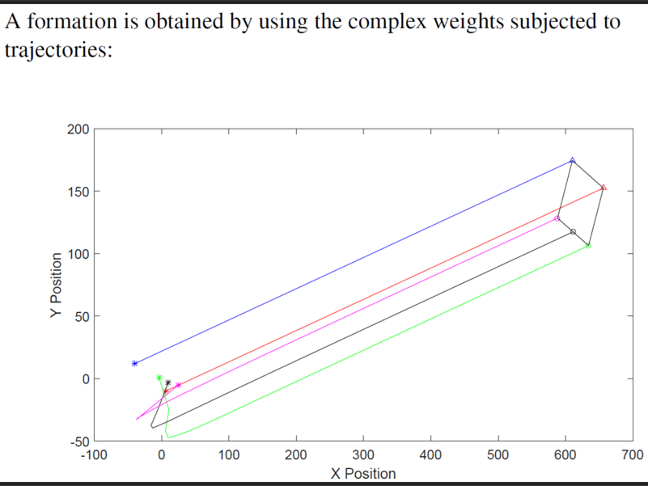
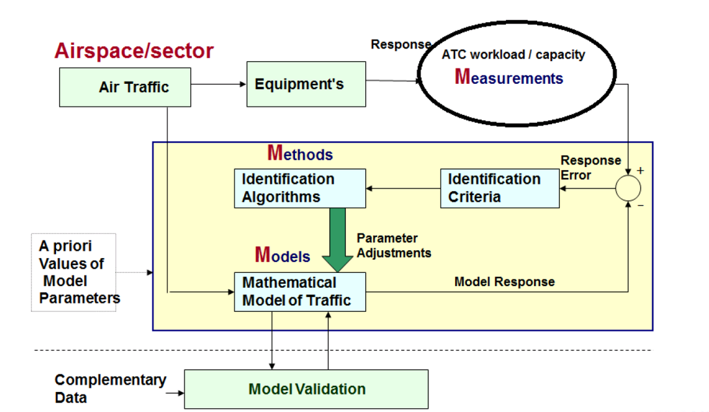
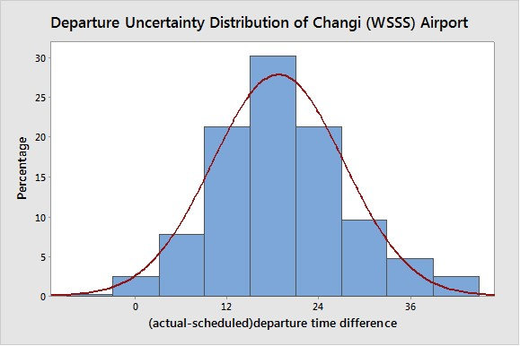

Distributed Air Traffic Flow Mangement
 |
Distributed Model Predictive Routing and Scheduling for Minimizing Network-wise En-Route and Airport Arrival Delay in Air Traffic Flow Management with an Eulerian-Lagrangian Flow Dynamic Model Research Project in Air Traffic Management Research Institute (ATMRI) A joint research institute with Civil Aviation Authority of Singapore (CAAS) and Nanyang Technological University (NTU) |
Summary
The goal of this research is to develop a distributed model-predictive air flow management approach (in terms of flight routing and scheduling), which is applicable to a large-scale air traffic network, and can mitigate the network-wise en-route and airport arrival delay caused by reduction of link capacities during abnormal situations such as severe weather in some regions or airspace restrictions due to military operational needs.
Project Objectives
To minimize the air traffic delay and enhance the air traffic system usage.
To develop a distributed model-predictive air flow management approach.
To provide a procedure, which translates optimal flow rate assignments to flight trajectories (i.e., departure times, speed and routes).
To explore the optimal air traffic flow management and flight trajectories generation when uncertainties are introduced.
Our Team
Principal Investigator
Prof Rong Su, Principal Investigator
Students
Yicheng Zhang, Ph. D. Student
Nadeesha Sandamali, Ph. D. Student
Pagadala Murali Babu Surekha, M. Sc. Student
Zhi Li, M. Sc. Student
Chaochao Chen, FYP Student
Research Staffs
Sanjoy Modal, Research Fellow (ATMRI)
Former Members
Majeed Mohamed, Research Fellow (ATMRI)
Qing Li, Research Fellow (ATMRI)
Minny Wong Mun Yi, FYP Student
Gabriel Kok Weixiang, FYP Student
Jovi Loh Si Jie, FYP Student
Research Topics
 |
|
 |
|
|  |
|
|  |
|
|  |
|
 |
|
Demo
Publications
Journal Papers
F. A. Yaghmaie, R. Su, F. L. Lewis, L. Xie. “Multi-party consensus of linear heterogeneous multi-agent systems.” IEEE Transactions on Automatic Control (2017).
Y. Zhang, R. Su, Q. Li, C. G. Cassandras, and L. Xie. “Distributed flight routing and scheduling in air traffic flow management.” IEEE Transactions on Intelligent Transportation Systems (2017).
S. Mondal, R. Su, and L. Xie. “Heterogeneous consensus of higher‐order multi‐agent systems with mismatched uncertainties using sliding mode control.” International Journal of Robust and Nonlinear Control (2016).
Conference Papers
Y. Zhang, R. Su, N. Sandamali, Y. Zhang and C. G. Cassandras. A Hierarchical Approach for Air Traffic Routing and Scheduling. 56th IEEE Conference on Decision and Control (CDC’17), 2017.
M. Majeed and R. Su, “Contraction Based Tracking Control of Autonomous Underwater Vehicle,” IFAC 20th World Congress (2017).
G. G. N. Sandamali, R. Su, Y. Zhang, and Q. Li, “Flight Routing and Scheduling with Departure Uncertainties in Air Traffic Flow Management,” in IEEE 13th International Conference on Control and Automation (ICCA) (2017).
Y. Zhang, R. Su, Q. Li, C. G. Cassandras, and L. Xie. “Distributed Flight Routing and Scheduling in Air Traffic Flow Management.” In Decision and Control (CDC), 2016 IEEE 55th Conference on, pp. 1080-1085. (2016).
Y. Zhang, Q. Li, and R. Su. “Sector-based Distributed Scheduling Strategy in Air Traffic Flow Management.” IFAC-PapersOnLine 49, no. 3: 365-370. (2016)
S. Mondal, and R. Su. “Finite time tracking control of higher order nonlinear multi agent systems with actuator saturation.” IFAC-PapersOnLine 49, no. 3: 165-170. (2016).
Q. Li, Y. Zhang, and R. Su. “A Flow-based Flight Scheduler for En-route Air Traffic Management.” IFAC-PapersOnLine 49, no. 3: 353-358. (2016)
S. Mondal, and R. Su. “Disturbance observer based consensus control for higher order multi-agent systems with mismatched uncertainties.” In American Control Conference (ACC), 2016, pp. 2826-2831. (2016).